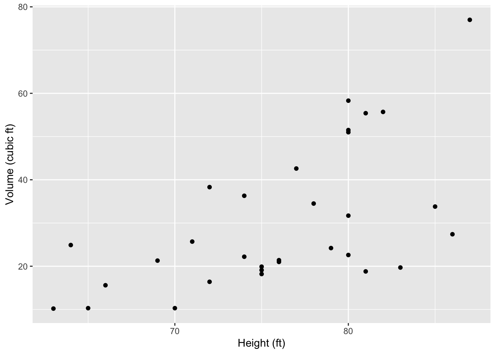

## GET Hank's working directory
getwd()[1] "/Users/stevenmh/projects/intro_to_ecology"## that will differ from yours!

In this chapter, you will,
butterflies.csv.
butterflies.csv in your data directory, data which should be inside Rwork.Here we investigate determinants of local biodiversity. As you learned in the lecture, many ecological and evolutionary forces contribute to the diversity a local community. From a hierarchial perspective, we’ve seen that the number of species in a local community is influenced by,
The data we will explore comes from research by David Stasek, Caitlin Bean and Thomas Crist, a graduate student, an undergraduate, and faculty member of Miami University at the time (Stasek et al. 2008. Environ. Entomol. 37:897-906).
Causal inference is the practice of estimating what happens to a response variable when another variable is changed. It is an academic discipline and area of research.
An important tool in causal inference is the causal graph, which is a box-and-arrow figure that illustrates putative causal relations. Most often a causal graph is a directed acyclic graph, or DAG.
For example, the following causal diagrams show factors that affect how much plants grow.
Notice that rain is not predicted to have a direct effect on plant growth but does have an indirect effect via its effect on soil moisture.
In the next section, you will use causal graphs to illustrate relationships among factors controlling butterfly diversity.
David Stasek and colleagues collected a lot of data at the Edge of Appalachia Preserve. We will use a subset of their data to assess how butterfly species diversity within a priariew patch (local diversity) may depend directly or indirectly on the size of the patch, how close the patch is to other patches, and the density of flowering plants upon which the butterflies depend.
Specifically, the data set includes the following variables:
cluster)patch)area)connect).flowers)hosts)Below, you will calculate for each prairie patch,
However, before we do that, we have to create a working hypothesis.
As you saw in lecture, dispersal and immigration from one patch into another can influence local diversity. Connectivity is a measure of how likely dispersal might be into a patch. The connectivity of a patch depends on the number, sizes, and distances away other patches patches are.
Work alone or with a partner to come up with a hypothesis of what you think will control the species richness OR the species diversity (Simpson’s diversity) in prairie patches from the EoA.
This DAG will be your working hypothesis
We always start the same way: open the relevant project, confirm the location of our working directory, and load packages we’ll need. After all that we’ll begin to read in data and assess our ideas.
Your project should be Rwork, and your working directory should be called Rwork. You should also have a folder inside Rwork called data.
Let’s see Hank’s working directory, which will differ from yours:
## GET Hank's working directory
getwd()[1] "/Users/stevenmh/projects/intro_to_ecology"## that will differ from yours!Make sure that when you run getwd(), you get something that ends with /Rwork
Now we load packages we’ll need:
library(tidyverse)── Attaching core tidyverse packages ──────────────────────── tidyverse 2.0.0 ──
✔ dplyr 1.1.4 ✔ readr 2.1.5
✔ forcats 1.0.1 ✔ stringr 1.5.2
✔ lubridate 1.9.4 ✔ tibble 3.3.0
✔ purrr 1.1.0 ✔ tidyr 1.3.1
── Conflicts ────────────────────────────────────────── tidyverse_conflicts() ──
✖ dplyr::filter() masks ggdag::filter(), stats::filter()
✖ dplyr::lag() masks stats::lag()
ℹ Use the conflicted package (<http://conflicted.r-lib.org/>) to force all conflicts to become errors…and now we’re ready.
butterflies.csv) in your data folder that is inside your BIO209W folder.Read the data, and view the column names.
bfly <- read_csv("data/butterflies.csv")Rows: 26 Columns: 55
── Column specification ────────────────────────────────────────────────────────
Delimiter: ","
chr (2): cluster, patch
dbl (53): area, connect, flowers, hosts, EUMA, PAPO, PACR, PAGL, PATR, BAPH,...
ℹ Use `spec()` to retrieve the full column specification for this data.
ℹ Specify the column types or set `show_col_types = FALSE` to quiet this message.names(bfly) [1] "cluster" "patch" "area" "connect" "flowers" "hosts" "EUMA"
[8] "PAPO" "PACR" "PAGL" "PATR" "BAPH" "COPH" "COEU"
[15] "PHSE" "EULI" "PIRA" "DAPL" "ENAN" "CYGE" "MECY"
[22] "HESO" "CEPE" "ASCE" "JUCO" "LIAR" "POIN" "POCO"
[29] "PHTH" "SPCY" "SPAP" "CHNY" "SACA" "CACE" "STME"
[36] "EVCO" "CELA" "CABO" "ANNU" "POPE" "POTH" "POOR"
[43] "WAEG" "POVE" "ATCA" "ATLO" "POZA" "EUVE" "NAIL"
[50] "AMVI" "EPCL" "THPY" "THBA" "ERSP" "ERHO" Our data set has the densities of each species, but we don’t have aggregate community-level variables. We would like simply the number of observed butterflies, regardless of their identities, that is, just the total butterfly density. We also need the number of species, or species richness. Last, we will calculate a measure of species diversity called Simpson’s diversity, an index that takes into account both the number of different species as well as their relative abundances.
Below, we calculate total butterfly density, butterfly species richness, and Simpson’s diversity. To do that, we need to create our own little functions in R to calculate those things. (After you copy and paste these functions into your script, make sure you run them in this session so that R learns them in this session.)
Species richness is just the number of species whose abundances are greater than zero. Here is a function that takes a vector of data (x) as input and returns the number of non-zero items.
richness <- function(x) { sum( x > 0 ) }Simpson’s diversity is probability that two individuals selected at random are different species. This is mathematically equivalent to the arithmetic complement (\(1-x\)) of the probability that two individuals selected at random are the same species (\(\sum_i^S p_i^2\)), or \[\mathrm{Simpson's\,\,diversity} = 1 - \sum_i^S p_i^2\]
simpsons = function(x) {
# convert density into proportion
p <- x / sum(x)
# calculate simpson's diversity
1 - sum( p^2 )
}Now we use these functions to actually calculate the quantities we want with our data.
# we start with our data,...
bfly2 <- bfly %>%
# operate across each row, one row at a time, ...
rowwise() %>%
# operating across only these columns, from EUMA to ERHO, and then
mutate(
total_N = sum(c_across(EUMA:ERHO)),
richness = richness(c_across(EUMA:ERHO)),
simpsons = simpsons( c_across(EUMA:ERHO) )
) %>%
# keep the columns we want, i.e.,
# get rid of all the columns of particular species ...
select ( cluster, patch, area, connect, flowers, hosts, total_N, richness, simpsons )
## and glimpse the remaing data set
glimpse(bfly2)Rows: 26
Columns: 9
Rowwise:
$ cluster <chr> "BR", "BR", "BR", "BR", "HP", "HP", "HP", "CH", "CH", "CH", "…
$ patch <chr> "p1BR", "p2BR", "p3BR", "p4BR", "p5HP", "p6HP", "p7HP", "p8CH…
$ area <dbl> 1.838, 0.087, 0.063, 0.331, 0.026, 0.035, 0.250, 0.666, 0.371…
$ connect <dbl> 1.487, 2.662, 2.446, 1.870, 1.772, 1.752, 1.238, 1.444, 1.595…
$ flowers <dbl> 218, 178, 160, 269, 42, 52, 249, 230, 143, 142, 140, 32, 34, …
$ hosts <dbl> 17, 13, 15, 18, 16, 15, 19, 19, 22, 19, 22, 17, 14, 29, 19, 1…
$ total_N <dbl> 73, 30, 27, 55, 30, 21, 64, 41, 66, 22, 52, 20, 28, 46, 84, 5…
$ richness <int> 18, 15, 14, 18, 14, 10, 18, 18, 21, 14, 19, 9, 16, 17, 20, 12…
$ simpsons <dbl> 0.8639520, 0.8955556, 0.8943759, 0.9104132, 0.8644444, 0.8027…Above you created your own DAG for your own working hypothesis. Now you will assess the weight of evidence in favor of each part of your hypothesis.
Create a scatterplot of each relationship in your DAG. Make sure each axis is clearly labelled. Put the response on the y-axis, and the cause on the x-axis. Here is an example of a scatterplot in which we assume that height influences volume.
# scatterplot
ggplot(data = trees, aes(x = Height, y = Volume) ) +
geom_point() +
labs(x = "Height (ft)",
y = "Volume (cubic ft)")
# save my graph with whatever name I choose.
ggsave("my_scatterplot_trees.png", width=5, height=5)Tweak the above code to makes scatterplots of each relationship in your DAG.
You will use correlation to assess the degree of association between each variable. The correlation we will use is the Pearson product moment correlation, r, which varies from -1 to 1, indicating perfect negative correlation to perfect positive correlation. The Pearson correlation coefficient measure the degree of linear relationship between two variables.
Correlation does not guarantee that one variable causes a change in the other. We need other lines of evidence for that.
The key output of the correlation will be the confidence interval of the estimate r. A 95% confidence interval of r is the range of values of r that we would be expected to see if we re-ran the same data collection or experiment millions of times and examined the central 95% of those estimates.
In R, you do that using cor.test(). Here is an example using made-up variables, x and y.
cor.test(x, y)
Pearson's product-moment correlation
data: x and y
t = 6.1227, df = 23, p-value = 3.026e-06
alternative hypothesis: true correlation is not equal to 0
95 percent confidence interval:
0.5691639 0.9018451
sample estimates:
cor
0.7872474 The main result is that the 95% confidence interval of the correlation coefficient r is from 0.569 to 0.902, indicting a strong positive association between these variables.
To do this with variables in our data set, we will use the dollar sign, $, to tell R which variables from bfly2 to use. For instance, here is the correlation between connectivity and density of host plants.
cor.test(bfly2$connect, bfly2$hosts)
Pearson's product-moment correlation
data: bfly2$connect and bfly2$hosts
t = 0.57468, df = 24, p-value = 0.5709
alternative hypothesis: true correlation is not equal to 0
95 percent confidence interval:
-0.2836463 0.4821015
sample estimates:
cor
0.1165063 This indicates that the 95% confidence interval lies from -0.28 to +0.48, suggesting that the relationship is highly uncertain and is almost as likely to be negative as it is to be positive.
For each relationship you hypothesized,
ggsave() to save the figure,Turn in two documents, your R script (with lots of comments!!), and one document that includes,